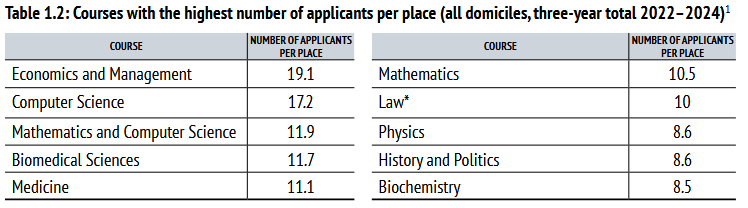

Hi! My name is Hamish.
I studied Natural Sciences with Physics at the University of Cambridge from 2017-2020, and was fortunate enough to graduate with first class honours. It was bizarre, enlightening, intensely challenging, and the best thing that ever happened to me.
After some postgraduate research in New Zealand I moved back to the UK and started teaching. Firstly I taught Maths at Eton College, an independent boys' school just outside of London, then I taught Maths at Channing School, an independent girls' school in London.
In 2025, I worked for an international education consultancy, Blue Education. My role largely consisted of gearing international students up for UK university admissions, especially Oxford and Cambridge. I developed revision curricula, helped run summer schools, went mildly viral on Xiaohongshu ("Chinese TikTok") and tutored hundreds of hours of personal statement, admissions tests, and interview classes.
University admissions can be daunting. Looking to the internet for support leads to conflicting pieces of advice and giant paywalls blocking your path. On this website I hope to make all the information and skills I've learnt on this journey available to anyone, that it may clarify an often confusing process and guide you towards admissions success.
Broadly speaking there's only five things that need your attention. I've tried to link useful sites and information for each, so that things are more OKAY less NO WAY. Contained also are suggestions of time allocation, difficulty ratings, and (at a minimum) my personal thoughts and opinions. These may vary from useful to useless - take whatever you need and ignore the rest!
I've tried to keep the advice and information here relatively independent of subject, in the hope that any student can use this site constructively. There is, however, an inherent bias present in a) my experience, b) my network and c) the admissions process itself, with eyes pointing towards STEM. Check out the figure below of the most competitive subjects at Oxford... does anything stand out?
